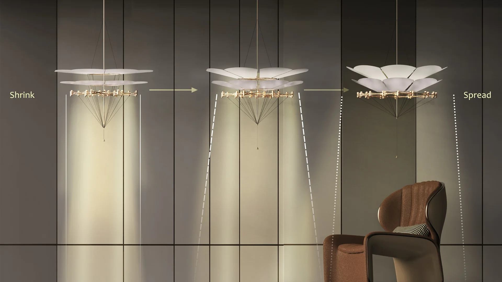
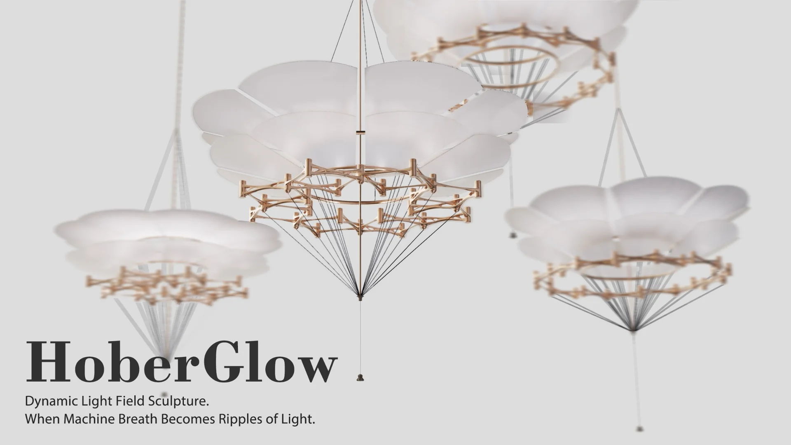
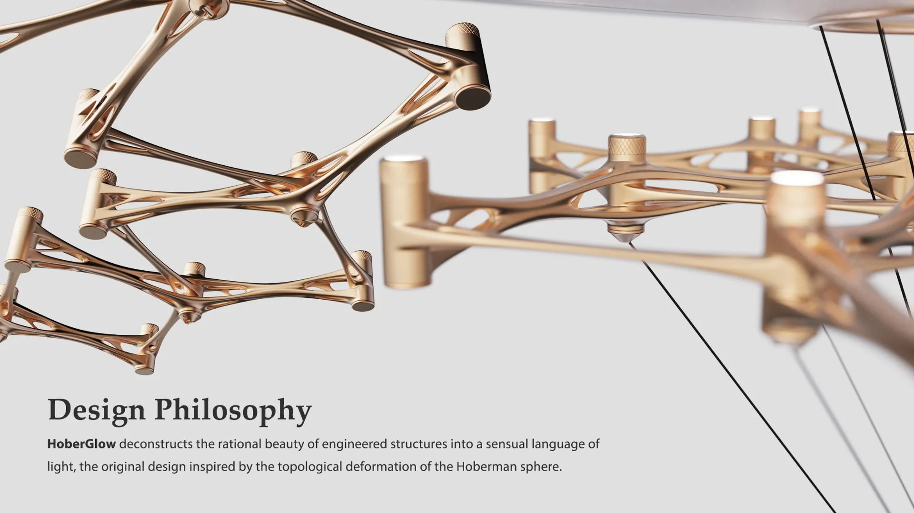
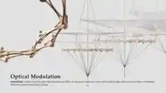
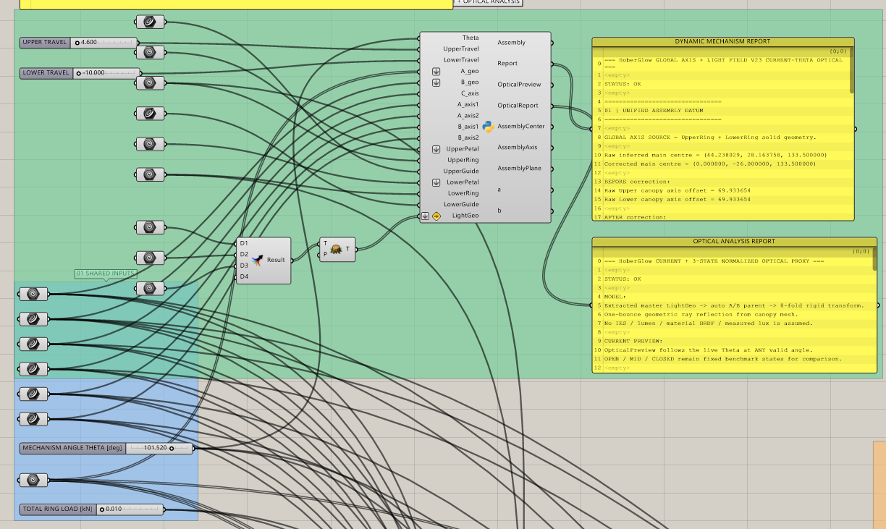

HoberGlow
Articulated scissor-linkage concept
Drag the cord or adjust the slider
From motion
to atmosphere.
HoberGlow investigates how a mechanically constrained structure can become an expressive light object. Its repeated articulated members coordinate a changing canopy, while the suspension and pull-cord interface make the transformation legible to the viewer.
This page presents the conceptual mechanism and design documentation. It deliberately does not distribute the company's production geometry.
Project context: initially an industry-sponsored team design project. The later parametric, optical and reduced-order structural research workflows were independently developed by Shuofei Zan.

A system in motion.




Design through
constraints.
The separately published Grasshopper framework exposes named mechanism inputs and a live optical preview. A five-element Karamba3D structural proxy represents one eighth of the cyclic assembly to explore relative behavior under simplified loading.
The online interaction above is an explanatory radial mechanism animation, not a validated performance prediction. Optical statements remain design hypotheses unless supported by measured photometric results.
